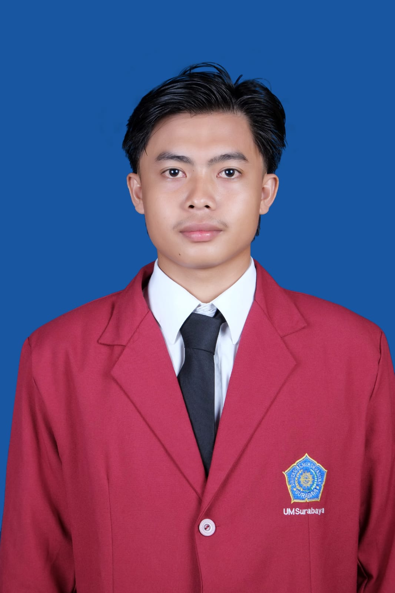

Saya adalah David Teguh Pasrtyo, lulusan Teknik Sipil dari Universitas Muhammadiyah Surabaya pada tahun 2024 dengan Indeks Prestasi Kumulatif (IPK) 3,19. Saya memiliki ketertarikan dan kompetensi dalam bidang teknik dan proyek lapangan infrastruktur.
Pengalaman profesional saya dimulai pada tahun 2024, di mana saya bekerja selama 6 bulan sebagai Pengawas Lapangan dalam proyek renovasi gedung Fakultas FTEIC Kampus ITS di bawah naungan CV Rahma Konsultan. Dalam peran ini, saya bertanggung jawab memastikan pelaksanaan pekerjaan sesuai dengan gambar kerja, spesifikasi teknis, serta menjaga kualitas dan progres pekerjaan di lapangan.
Selanjutnya, pada tahun 2025, saya terlibat dalam proyek pembangunan bangunan pengaman pantai jenis breakwater rubble mound di Kota Pekalongan selama 10 bulan. Dalam proyek ini, saya menjalankan peran ganda sebagai Pengawas Lapangan sekaligus terlibat dalam aspek perencanaan. Pengalaman ini memperkuat kemampuan saya dalam koordinasi proyek, pengendalian mutu, serta pemahaman teknis terhadap konstruksi pesisir.
Saya merupakan individu yang teliti, bertanggung jawab, dan mampu bekerja baik secara individu maupun dalam tim. Dengan kombinasi pengalaman lapangan dan perencanaan, saya siap berkontribusi dalam proyek-proyek konstruksi yang menuntut ketelitian, ketepatan, dan profesionalisme.
